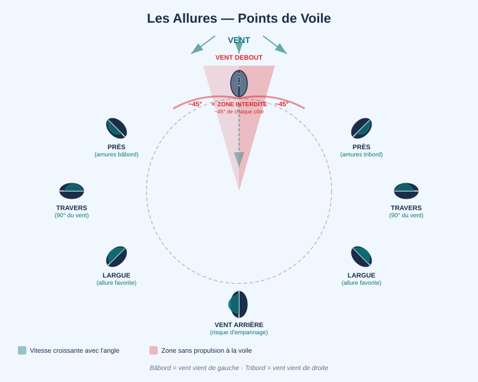
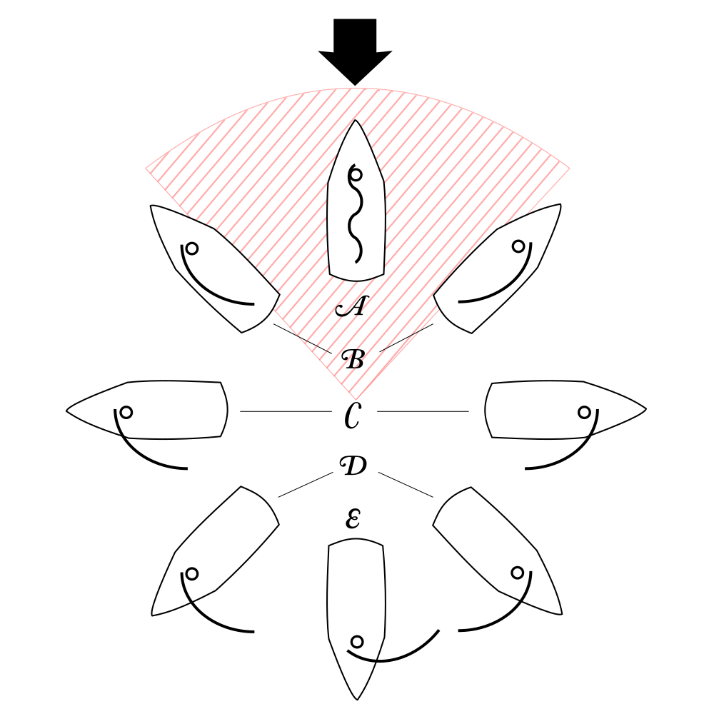

La Voile — Théorie, Allures et Réglages
Vendredi matin, 9h00. Butterfly Valley, départ.
L'Imbat arrive à l'heure. 10 nœuds d'abord, doux, du sud-ouest. Rebeca est sur le pont avant, prête à haquer la drisse. "On essaie à la voile ?"
"Rebeca, tu tiens cette drisse — ne la lâche qu'à mon ordre," dit Emmanuel. Il oriente le bateau face au vent. Rebeca tire, main sur main, la grand-voile monte. Puis Emmanuel déroule le génois. Le Deniz Rüzgarı hésite une seconde, puis la toile prend le vent. Le bruit du moteur disparaît. Le bateau glisse. Emmanuel tient la barre en souriant — c'est son moment.
"C'est silencieux," dit Christelle, surprise. Elle pose la main sur le bastingage. "On sent le bateau vivre différemment."
Rebeca, les bras écartés, s'appuie sur la filière. "¡Qué lindo! — comment on dit ça ? Comme c'est joli ?" William, depuis le cockpit : "Exactement ça."
"C'est tout l'inverse du moteur," dit Emmanuel. "Avec la voile, tu n'avances pas malgré le vent. Tu avances grâce à lui. Même contre lui — si tu sais comment."
Pourquoi la voile fonctionne
La voile n'est pas qu'un grand parachute qu'on pousse. À la plupart des allures, elle agit comme une aile d'avion : un profil aérodynamique courbé qui génère une force de portance perpendiculaire au vent.
Quand le vent frappe la voile, l'air se divise en deux flux : celui qui passe sur la face sous le vent (le côté creux) accélère car il doit parcourir un chemin plus long ; celui sur la face au vent ralentit légèrement. Selon le principe de Bernoulli, l'air qui accélère crée une dépression (basse pression) sur la face sous le vent. Cette dépression "aspire" littéralement la voile — et donc le bateau — vers l'avant et légèrement vers le bas.
C'est ce mécanisme de portance qui permet à un voilier de remonter presque face au vent, à 35-40° de l'axe du vent. La composante propulsive est la projection de cette force vers l'avant.
Vent arrière : La portance s'effondre quand la voile est exactement dans le vent. À vent arrière, le mécanisme redevient de la poussée (traînée aérodynamique) : la voile bloque le vent comme un parachute, et le bateau est simplement poussé.
La zone interdite (no-go zone) : À moins de 35-40° du vent, l'angle d'attaque devient trop grand, la voile décroche (stall) et ne génère plus de portance. Impossible de remonter plus près du vent — le bateau ralentit et ne répond plus à la barre. Cette zone s'appelle le "près débout" ou simplement "face au vent".
La quille et la dérive : deux ailes en tandem
La voile fonctionne comme une aile dans l'air — mais ce mécanisme crée un problème inattendu. Au près, la majeure partie de la force générée est latérale : elle pousse le bateau sur le côté, pas vers l'avant. Sans contrepoids, le voilier glisserait de travers plutôt que d'avancer.
La force latérale de la voile
Au près serré, l'angle entre le vent apparent et l'axe du bateau est d'environ 35–40°. La force totale de la voile pointe perpendiculairement à la voile — donc en oblique, à la fois vers l'avant et vers le côté sous le vent. La composante latérale est bien plus grande que la composante propulsive. C'est elle qui crée la gîte et qui tend à faire dériver le bateau (le pousser latéralement).
VENT ──►
Force totale ↗ (perpendiculaire à la voile)
│
├──────────────► composante propulsive (avance)
│
▼
composante latérale → dérive potentielle
La quille comme hydrofoil
La quille agit comme la voile, mais dans l'eau. Quand le bateau commence à glisser latéralement, la quille se retrouve avec un angle d'attaque par rapport à l'eau qui la traverse — elle génère alors une portance hydrodynamique qui s'oppose à la dérive.
Voile + quille forment deux ailes en tandem : l'une dans l'air, l'autre dans l'eau, équilibrant leurs forces latérales respectives. Le résultat net est un mouvement vers l'avant.
AIR → force voile (portance → forward + latérale sous le vent)
↕ équilibre des composantes latérales
EAU → force quille (portance → latérale au vent = anti-dérive)
Plus le bateau va vite, plus l'angle d'attaque de la quille est efficace, et moins il dérive. C'est pourquoi un voilier qui perd de la vitesse au près dérive nettement plus — la quille perd son efficacité.
La dérive résiduelle
La quille ne peut jamais éliminer totalement la dérive. Le bateau garde toujours un petit angle de dérive (leeway) — quelques degrés par temps calme, 5 à 8° par mer formée ou vent fort. La proue pointe dans une direction ; le sillage part légèrement sous le vent.
C'est cette dérive résiduelle que le navigateur corrige dans son point estimé (voir concepts/cap-route-derive) : la route surface n'est pas le cap barré, mais le cap décalé côté sous-le-vent de quelques degrés.
Le lest : stabilité et couple de redressement
La quille a un second rôle tout aussi vital. En plomb ou en fonte, le lest représente 30 à 40 % du déplacement du voilier. Cette masse concentrée en bas de la quille abaisse le centre de gravité (G) bien en dessous du centre de carène (C) — le centre géométrique du volume immergé.
Quand le bateau gîte, deux forces créent un couple de redressement :
- Le poids du lest tire G vers le bas (G reste fixe par rapport au bateau)
- La poussée d'Archimède pousse C vers le haut du côté immergé (C se déplace)
L'écart entre G et C crée un bras de levier qui rappelle le bateau à la verticale — et ce bras augmente avec la gîte (jusqu'à ~120° pour un voilier moderne). C'est ce qui rend un voilier à quille lestée pratiquement inchavirable dans des conditions normales, et fondamentalement différent d'un dériveur léger.
Un voilier à quille lestée est stable — pas invincible. Une gîte dépassant 90° (couché sur le côté) peut temporairement inverser le couple de redressement si de l'eau entre par les écoutilles ouvertes. Les marins prudents ferment toujours les panneaux avant une mer forte et réduisent la voilure tôt : un bateau bien à plat gîte moins et reste mieux contrôlé.
Conséquences pratiques
| Quille courte / bulbe | Dérive lestée | Quille longue | |
|---|---|---|---|
| Anti-dérive | Très bonne | Bonne (relevable) | Moyenne |
| Stabilité | Excellente | Correcte | Très bonne |
| Tirant d'eau | 1,5–2,5 m | 0,3–0,8 m (relevée) | 1,2–2 m |
| Accès peu profond | Difficile | Idéal | Limité |
Le tirant d'eau de la quille lestée impose la profondeur minimale de navigation. Sur un gulet comme le Deniz Rüzgarı, le tirant d'eau est d'environ 1,6 m — il suffit de le garder en tête en approchant des criques peu profondes du golfe de Göcek.
Voir concepts/quille-principe, concepts/voile-theorie-base, concepts/voile-trim-efficace, concepts/cap-route-derive, concepts/manoeuvre-voile-base.
Les allures

L'allure est l'angle entre l'axe du bateau et la direction du vent réel. Le schéma ci-dessous est l'une des images les plus importantes de tout le cours : il représente un voilier dans chacune des positions possibles par rapport au vent, disposées en arc de cercle autour de la direction du vent.

En partant de la zone face au vent et en tournant progressivement, voici chaque allure :
- Près serré (30–45° du vent) — L'allure la plus serrée possible. Les voiles sont bordées au maximum, presque dans l'axe du bateau. La gîte est forte, le bateau tape dans le clapot. C'est l'allure du louvoyage, quand on doit remonter au vent. Le barreur surveille en permanence les penons et le faseyement du guindant.
- Près (ou près bon plein, 45–60°) — On relâche légèrement les voiles. Le bateau accélère, gîte moins, et le cap remonte moins au vent. C'est souvent l'allure la plus efficace en VMG (vitesse réelle vers l'objectif au vent).
- Bon plein / Travers (~60–90°) — Le vent arrive sur le côté du bateau. Les voiles sont bien ouvertes. C'est généralement l'allure la plus rapide en vitesse pure : le flux aérodynamique sur la voile est optimal, le bateau est relativement à plat.
- Largue (120–150°) — Le vent vient de l'arrière du travers. Allure très confortable : peu de gîte, bonne vitesse, mer agréable. Les passagers adorent le largue. Les voiles sont bien choquées.
- Grand largue (150–170°) — Le vent est presque dans le dos. Attention au risque d'empannage involontaire (la bôme qui passe brutalement de l'autre côté). Le barreur doit rester vigilant et peut installer un tangon pour stabiliser le génois.
- Vent arrière (~180°) — Le vent souffle exactement dans le dos du bateau. Paradoxalement, c'est l'une des allures les plus lentes : la voile ne fonctionne plus par portance aérodynamique mais par simple poussée (traînée). On peut naviguer en "ciseaux" (wing-and-wing), grand-voile d'un côté et génois de l'autre, mais c'est instable.
La zone interdite (no-go zone) se trouve en haut du diagramme : environ 35–40° de chaque côté du lit du vent. Dans cette zone, aucun réglage de voile ne permet d'avancer — les voiles faseyent, le bateau s'arrête. C'est pour contourner cette zone qu'on louvoie.
| Allure | Angle vent | Description | Sensation |
|---|---|---|---|
| Près serré | 30–45° | Maximum de louvoyage, voiles bordées au maximum | Bateau gîté, spray, travail intense. VMG (vitesse vers le vent) calculée. |
| Près abattu | 45–60° | Meilleur compromis vitesse/cap au près | Plus rapide, moins de gîte — souvent l'allure optimale |
| Vent de travers | ~90° | Vent plein sur le côté | Souvent l'allure la plus rapide. Forces équilibrées, bateau stable |
| Largue | 120–150° | Vent sur l'arrière du travers | Très confortable. Passagers heureux. Vitesse bonne sans efforts |
| Grand largue | 150–170° | Vent presque arrière | Risque d'empannage involontaire si barre non tenue |
| Vent arrière | ~180° | Vent exactement en poupe | Plus lent que le largue. Navigation wing-and-wing possible mais instable |
Louvoyage : Pour atteindre un point qui se trouve dans la zone interdite (directement au vent), il faut naviguer en bords successifs (bord tribord, bord bâbord, etc.) en faisant des zigzags. C'est le louvoyage (beating). La VMG (Velocity Made Good) mesure la vitesse réelle vers l'objectif — parfois un bord plus large est plus rapide que le près serré dur.
Vent réel vs vent apparent
Imaginez que vous marchez face au vent à 5 km/h avec un vent réel de 10 km/h dans le dos : vous ressentez 5 km/h de vent dans le dos. Maintenant marchez à la même vitesse mais face au vent : vous ressentez 15 km/h. C'est le vent apparent : la combinaison du vent réel et du vent créé par votre propre déplacement.
Pour un bateau :
Vent apparent = Vent réel vectoriellement + Vent créé par la vitesse du bateau
Conséquences pratiques :
- Le vent apparent vient plus de l'avant que le vent réel (sauf vent arrière)
- Plus le bateau va vite, plus le vent apparent se remonte vers l'avant
- C'est l'angle du vent apparent (pas du vent réel) qui détermine comment orienter les voiles
En pratique : quand l'Imbat monte à 14 nœuds et que vous faites 7 nœuds au largue, votre girouette et vos penons indiquent le vent apparent — environ 10° plus avant que le vent réel. Si vous essayez d'orienter vos voiles par rapport au vent réel observé depuis la côte, vous sererez constamment sur-choqué.
Les réglages de voile
Les penons (tell-tales) sont de petits fils de laine ou de ruban plastique fixés à environ 15 cm du guindant, des deux côtés de la voile. Leur comportement est l'indicateur le plus direct d'un bon réglage :
| État des penons | Interprétation | Action |
|---|---|---|
| Tous deux horizontaux | Voile réglée parfaitement | Rien |
| Penon au vent (face au vent) qui se lève | Allure trop près, voile pas assez choquée | Abattez légèrement ou choquéz l'écoute |
| Penon sous le vent (face sous le vent) qui danse | Voile trop bordée (sur-choquée) | Choquéz légèrement l'écoute |
| Les deux penons s'enroulent | Vous êtes dans la zone interdite | Abattez |
Lecture rapide des penons — schéma visuel :
VENT ──►
[Au vent] horizontal + [Sous le vent] horizontal = PARFAIT ✓
[Au vent] monte ↗ + [Sous le vent] horizontal = Trop près / choquer
[Au vent] horizontal + [Sous le vent] s'enroule ↺ = Trop bordé / lofer
[Au vent] s'enroule + [Sous le vent] s'enroule = Zone morte / abattre
Les penons sont votre tableau de bord le plus fiable — plus direct qu'un anémomètre, plus honnête qu'un GPS. En un coup d'œil, ils vous disent si la voile travaille ou si elle se bat contre le vent.
Les trois contrôles de forme de la grand-voile :
- Écoute (mainsheet) : contrôle l'angle de la voile par rapport au vent, et indirectement la gîte.
- Halebas (kicker/vang) : tire la bôme vers le bas, réduit le vrillage, rend la voile plus plate au près. Essentiel au portant pour éviter que la bôme ne monte.
- Cunningham : tension sur le guindant, avance le point de creux vers l'avant — utile par vent fort pour aplatir la voile.
Pour le génois : La position du car d'écoute sur son rail règle le vrillage. Trop en avant : la chute est trop tendue, le bas de la voile est cramé. Trop en arrière : trop de vrillage, le haut faseye. Le test : lofer légèrement — le guindant doit commencer à faseyer uniformément de bas en haut.
Prendre un ris : Dès que le bateau gîte excessivement et que la barre demande des efforts — temps de réduire la voilure. La règle du bon marin : réduire tôt vaut mieux que tard. Un bateau droit va souvent plus vite dans le clapot.
Voir concepts/voile-trim-efficace.
L'Imbat dans le golfe de Göcek :
Le vent de mer turc s'installe généralement entre 10h et 11h en été, 10–18 nœuds du SW/NW, soutenu jusqu'à 17h–18h.
Depuis Butterfly Valley vers Göcek (cap ~060°), avec un Imbat de 280° à 14 nœuds, vous êtes au largue (environ 140° d'angle vent réel). C'est l'allure la plus confortable — le bateau est stable, la vitesse bonne, les passagers peuvent manger sans avoir peur.
Si l'Imbat force à 20 nœuds : un ris dans la grand-voile avant que ce soit nécessaire. Le gulet reste bien équilibré et la vitesse ne diminue pas beaucoup — la surface réduite est compensée par la pression plus forte.
Question 1 : Le Deniz Rüzgarı est au près serré, amure tribord. Un autre voilier arrive en sens contraire, amure bâbord. Qui cède le passage ?
- A) L'autre voilier — il est amure bâbord, l'amure tribord est prioritaire
- B) Le Deniz Rüzgarı — il est au près, donc il peut facilement lofer
- C) Ni l'un ni l'autre — en situation face à face chacun vire à tribord
Voir la réponse
Réponse : A — Entre deux voiliers sous voiles, la règle 12 du RIPAM : l'amure tribord (vent de tribord) est toujours prioritaire sur l'amure bâbord. Le Deniz Rüzgarı, amure tribord, est le stand-on vessel. L'autre voilier (amure bâbord) doit s'écarter. C s'applique aux bateaux à moteur en situation face à face, pas aux voiliers sous voiles.Question 2 : Les deux voiliers de la question précédente sont tous deux amure bâbord, le Deniz Rüzgarı étant au vent de l'autre. Qui cède le passage ?
- A) Le Deniz Rüzgarı — il est au vent et doit s'écarter pour protéger l'autre
- B) L'autre voilier — il est sous le vent et ne peut pas facilement voir le Deniz Rüzgarı
- C) Ni l'un ni l'autre — même amure, il n'y a pas de règle de priorité
Voir la réponse
Réponse : A — Règle 12 : même amure → le navire au vent s'écarte. Le Deniz Rüzgarı est au vent de l'autre (le vent lui vient d'abord), donc il doit céder. Logique : le bateau sous le vent a moins de visibilité et moins de marge de manœuvre (il ne peut pas lofer sans risquer de chavirer contre l'autre).Question 3 : L'Imbat de l'après-midi souffle 15 nœuds du SW. Le Deniz Rüzgarı veut rejoindre Göcek qui est droit dans l'axe du vent. Quel est le cap à adopter ?
- A) Cap direct sur Göcek (vent debout) — avec une grand-voile et un génois bien bordés
- B) Tirer des bords au près serré en zigzag, en alternant amure tribord et amure bâbord
- C) Attendre que le vent tourne — il est impossible de progresser face au vent
Voir la réponse
Réponse : B — Un voilier ne peut pas naviguer directement face au vent (zone morte : environ 45° de chaque côté de l'axe du vent). Pour remonter au vent, il faut louvoyer (tirer des bords) en alternant les amures au plus près serré. A est impossible ; C est faux — le louvoyage est précisément la technique pour progresser face au vent.Question 4 : Les penons (tell-tales) du Deniz Rüzgarı côté sous le vent s'enroulent vers le bas. Que doit faire William ?
- A) Border l'écoute (tirer dessus) — la voile est trop libre
- B) Choquer l'écoute (libérer) — la voile est trop bordée, l'angle d'attaque est trop grand
- C) Lofer légèrement — il faut rapprocher l'axe du bateau du vent
Voir la réponse
Réponse : B — Penons sous le vent enroulés = signe de décrochage côté sous le vent : la voile est trop bordée (trop tendue par rapport au vent apparent). Choquer légèrement l'écoute réduit l'angle d'attaque et le décrochage disparaît. Border (A) aggraverait le problème. Lofer (C) est utilisé quand les penons AU VENT s'agitent (voile trop abattue).Le retour vers Göcek sous voile est magnifique. Mais à l'approche de la marina, il faut amener les voiles et manœuvrer au moteur dans l'espace réduit. "Comment on mouille l'ancre dans une crique ? Comment on accoste le long d'un quai ?" demande William.
Session 4.2 — Manœuvres à la Voile et au Moteur.